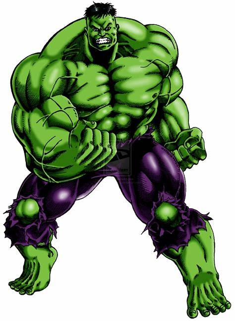
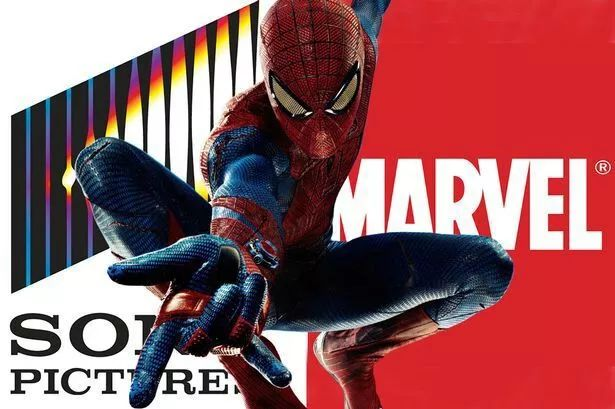
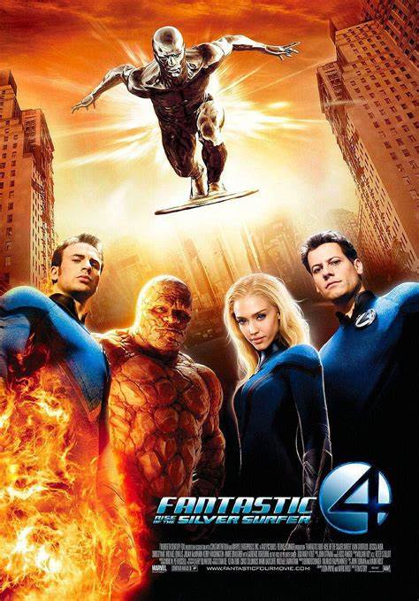
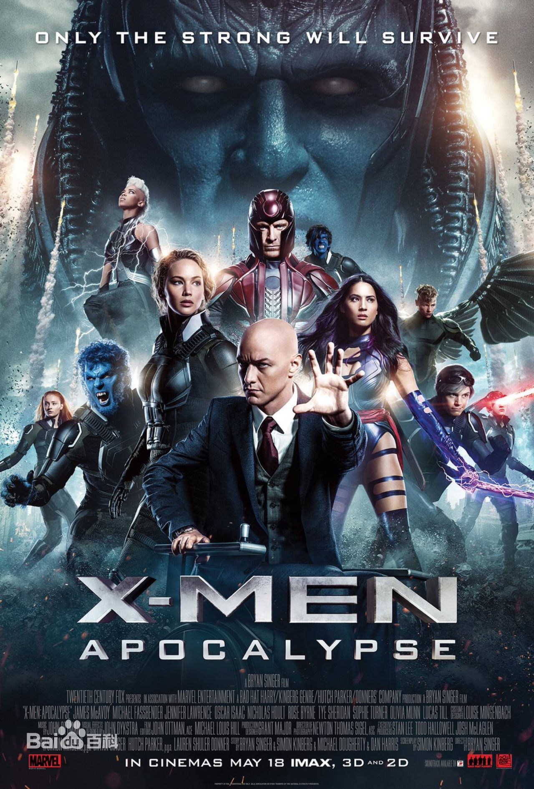
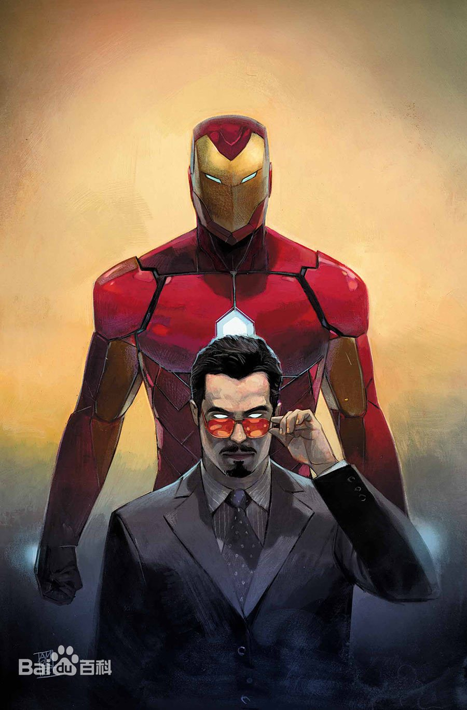
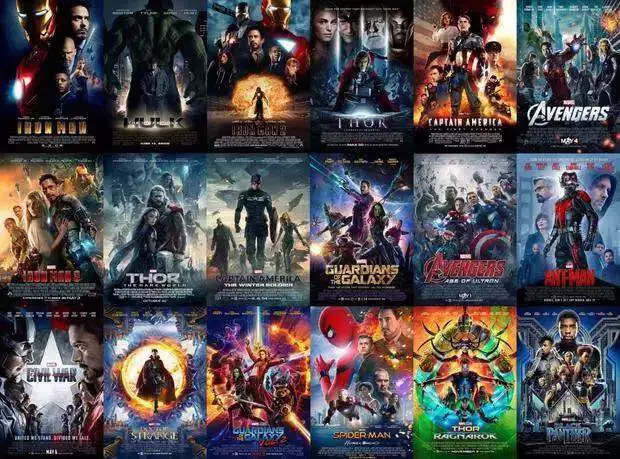

漫威十年:从破产重组到改变好莱坞
漫威电影的庞大宇宙，始于漫威影业的背水一战。
1996年，随着电子游戏以及互联网等新娱乐方式的崛起，美国漫画业的泡沫破灭，大批漫画店破产关门，漫威的销售渠道受损，上市仅五年，漫威便不得不申请破产重组。
在急需资金恢复元气的情况下，漫威影业开始靠低价售出自己旗下超级英雄的电影改编权来换取资金。环球买走了绿巨人浩克，索尼买走蜘蛛侠的拍摄版权，而福克斯选中了神奇四侠和X战警。
   其中，《X战警》《蜘蛛侠》两个系列横扫美国票房，仅蜘蛛侠系列就为索尼转了20多亿的票房。但这两个系列电影仅给漫威带来不足1亿的票房分成。当不想再为人作嫁的漫威决定自己制作电影时，才发现最受欢迎的超级英雄几乎都被卖了。
经过深思熟虑，漫威选择了漫威宇宙的“二线英雄”钢铁侠。
最开始拍摄电影的时候，漫威已经近乎山穷水尽，把二十多个超级英雄版权都抵押给银行才贷出了五亿美元。当时的“二线演员”小罗伯特唐尼也事业处于低谷，刚刚戒毒归来急需翻身。在斯坦李的最初构想里，钢铁侠就是一个亦正亦邪的反英雄。钢铁侠花花公子的性格和故事，与唐尼的雅痞气质和在好莱坞的沉浮经历十分吻合。
二线演员，二线英雄和最后一搏的漫威，背水一战，电影一炮而红。
同年，《无敌浩克》上映，由于与环球的版权纷争，和相对强势的主演爱德华诺顿，这部电影反响平平。但电影结束时，片尾的彩蛋让观众惊奇地发现，原来两部电影是有联系的！
2009年，迪士尼以42.4亿美元现金加股票的方式收购了漫威。漫威从此拥有了最强大的营销和衍生品生产链条。被收购后，漫威电影的市场营销的费用增加了数倍，整个产业链被彻底打通，超级英雄的IP价值发挥到了极致。
从《钢铁侠》和《无敌浩克》起，漫威开始重视IP的价值，逐渐收回被卖掉的IP版权，通过一部又一部的单体电影构建起“漫威电影宇宙。”每部电影有共同的故事元素、情节设定和角色纳入重新构建的“漫威电影宇宙（MCU）”，在每部之间以彩蛋铺路，利用悬念串联起整个故事逻辑，不断延长MCU的生命力。这种集合型的商业片运作思维，将一个制片公司的所有影片全部联系在一起，是好莱坞前所未有的，这个理念也取得了前所未有的成功。
从《无敌浩克》之后，漫威不再用难控制的一线演员做主演，而是在超级英雄的选择上大胆启用形象气质符合角色的二线演员，导演也多选择非著名导演，这一方面压缩了制作成本，另一方面也确保了漫威对电影风格的绝对把控。
19部漫威电影，除了《蜘蛛侠：英雄归来》相对轻喜剧些，其他18部电影在不同的导演执导下，仍展现出相对统一的视觉风格。
漫威19部影片制作成本大多在两亿美元左右，共有5部影片的全球票房超过10亿美元，其中《复仇者联盟》更是超过了15亿美元。而18部影片的全球平均票房，也轻松越过8亿美元，堪称名副其实的票房收割机。